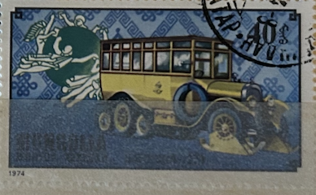
| SOURCE | TITLE| IMAGE MATCH | click to source page |
| www.ebay.com | Ham Radio QSL QSO Postcard SM6BZE, Trollhättan, Västra ... | 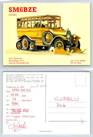 |
| www.ebay.com | Sweden - 1973 - Postal-coaches - No perforation right ... | 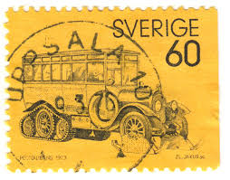 |
| www.shutterstock.com | Mongolia Circa 1974 Stamp Printed Mongolia Stock Photo ... | 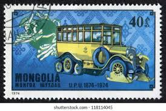 |
| www.ebay.com | SWEDEN 1979 STAMP ON STAMP ROWLAND HILL STAMPS ON STAMPS FDC ... | 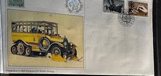 |
| thegayraj.com | First Postal Bus - a Scania-Vabia from 1922 equipped for ... | 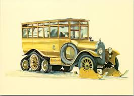 |
| www.ebay.com | GERMANY POSTER STAMP ADLER AUTOMOBILE CAR OMNIBUS 1909 | eBay | 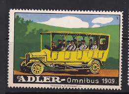 |
| www.gruzovikpress.ru | Полугусеничные почтовые автобусы Scania-Vabis с ленточным ... | 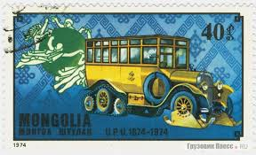 |
| www.collectorbazar.com | Sweden 1973 Postal - coaches mnh | 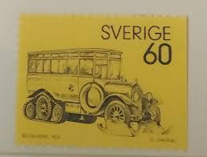 |
| www.shutterstock.com | Mongolia Circa 1974 Stamp Printed Mongolia Stock Photo ... | 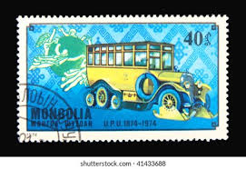 |
| auctionet.com | PRINT, "Scania-Vabis". Art - Engravings & Prints - Auctionet | 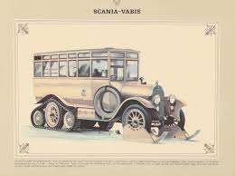 |
| www.tradera.com | Se produkter som liknar Scania-Vabis från 1923 på Tradera ... | 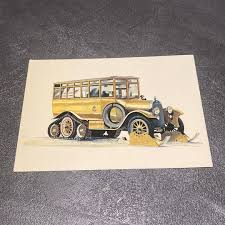 |
| www.superstock.com | transport/transportation busses B»ssing 1912 drawing by ... | 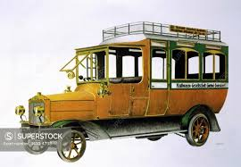 |
| www.dreamstime.com | Stamp 3.70 Swedish Crowns Printed by Sweden, Shows Domestic ... | 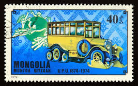 |
| en.todocoleccion.net | dm)1978, sweden, first day cover, issue, space - Buy Antique ... | 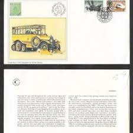 |
| www.alamy.com | Mail coach driver hi-res stock photography and images - Alamy | 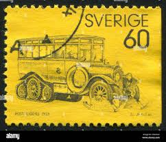 |
| www.mysticstamp.com | 921 - 1965 Germany - Mystic Stamp Company | 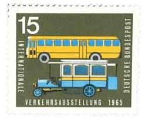 |
| www.nadirkitap.com | PALETLİ OTOBÜS TEMALI MOĞOL PULU | Nadir Kitap | 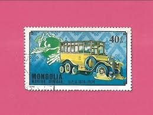 |
| hughevelynprints.com | 1909 Commer Single-Deck Country Bus – Hugh Evelyn Prints | 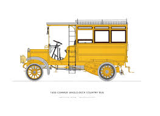 |
| findyourstampsvalue.com | Value of sverige 60 stamps | 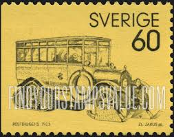 |
| www.ebay.com | 1921 NOTGELD BILL w VINTAGE YELLOW TAXI BUS in MOTION ... | 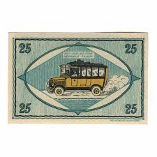 |
| auctionet.com | SWEDISH STAMPS, lot of 19 envelopes. Coins, Medals & Stamps ... | 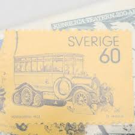 |
| www.tradera.com | Se produkter som liknar ÄLDRE VYKORT STÄMPLAT ANDERST.. på ... | 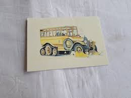 |
| www.hipstamp.com | Germany ca1910s Metzeler Advertising Auto Airplane Original ... | 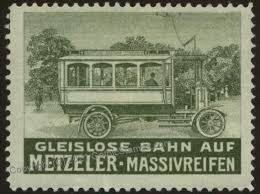 |
| www.facebook.com | In 1915 #OnthisdayinEriehistory Erie's first jitney bus went ... | 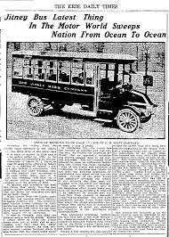 |
| numizm.at | Почтовая марка 40 мунгу 1974 года Монголия «100-летие ... | 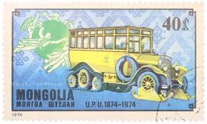 |
| www.mysticstamp.com | 2061 - 1983 20c Street Cars: "Bobtail" Horsecar, 1926 ... | 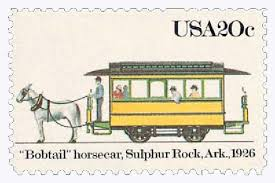 |
| boardgamegeek.com | Train of Thought Touring Snowdonia - Malta Railway | Train ... | 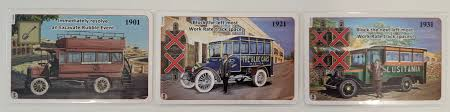 |
| en.numista.com | 25 Pfennigs - Municipality of Unterweißbach (Thuringia ... | 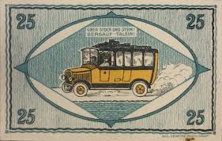 |
| www.instagram.com | Memory Lane Mondays September 15th post is all about school ... | 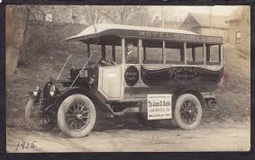 |
| shiawasseehistory.com | Cora V. Taylor & the Indian Trails Bus Line | 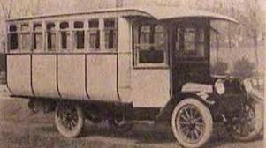 |
| en.wikipedia.org | File:Saurer Alsa 1923.jpg - Wikipedia | 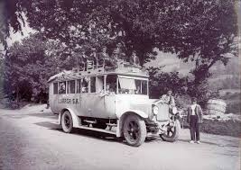 |
| www.facebook.com | When the Douglas Corporation got its first motor buses in ... | 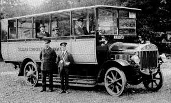 |
| www.dba.dk | OL ATLANTA 1996 FRIMÆRKE | DBA | 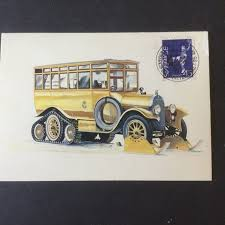 |
| commons.wikimedia.org | File:Typical Jitney bus, 1920.png - Wikimedia Commons | 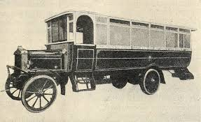 |
| stampandcovergalaxy.com | SCG5229 - Germany 1965 – International Transport Exhibition ... | 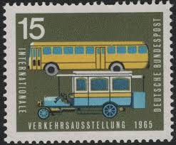 |
| www.modellspielwaren-reinhardt.de | Modellspielwaren Reinhardt - Matchbox Yesteryear Scania ... | 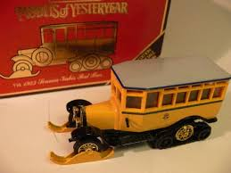 |
| in.pinterest.com | WheelsAge | 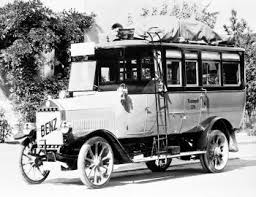 |
| busride.com | Prevost celebrates its first 90 years - BUSRide | 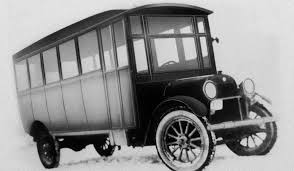 |
| www.youtube.com | A rundown of history | 125 years of Mercedes-Benz Buses ... | 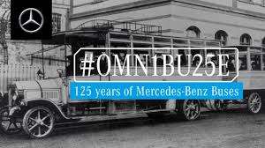 |
| en.wikipedia.org | Büssing - Wikipedia | 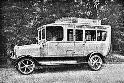 |
| esam.ir | تمبر کلاسیک سوئد | 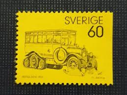 |
| www.ebay.fr | L5976 MONGOLIE Timbre N° Y&T 764 de 1974 " cor Postal ... | 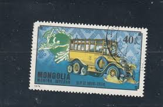 |
| psmag.com | The First Golden Age of Electric Car Advertising - Pacific ... | 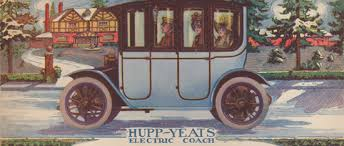 |
| www.alamy.com | Mail coach horn hi-res stock photography and images - Alamy | 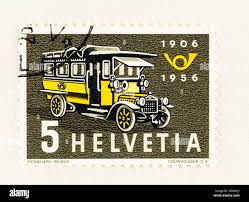 |
| www.team-bhp.com | Stamps featuring Vintage and Classic Cars upto 1975 - Page 2 ... | 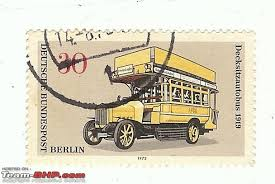 |
| myvalleytransit.com | History - Valley Transit | 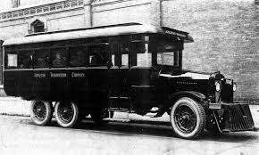 |
| ephemeralnewyork.wordpress.com | An early city bus motors down Fifth Avenue | Ephemeral New York | 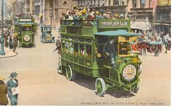 |
| www.reddit.com | A collection of some North Korean stamps commemorating 60 ... | 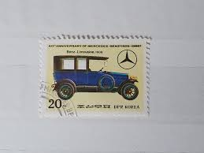 |
| www.istockphoto.com | 460+ Antique Bus Stock Illustrations, Royalty-Free Vector ... | 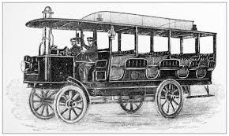 |
| sprzedajemy.pl | autobus scania - Sprzedajemy.pl | |
| www.tradera.com | 2 oskrivna vykort Posten Scania-Vabis 1922/1923.. | Köp på ... | |
| commons.wikimedia.org | File:1904 LGOC's first motor bus.jpg - Wikimedia Commons | |
| www.youtube.com | Truck Wars: The Truck War Between Oldsmobile and Ford ... | |
| www.dreamstime.com | Centennial Stamp of the Inauguration of the Statue of ... | |
| www.philasearch.hk | Philasearch : Stamps Vehicles: | |
| colnect.com | Stamp: 1907 Takuri Type 3 - Goofy, Mickey, Minnie (Maldives ... | |
| www.fdc.ax | 2 nya svenska Förstadagsbrev FDC :: fdchuset | |
| www.toymart.com | Matchbox Yesteryear Y16, Scania Vabis Post Bus - Free Price ... | |
| www.pdxhistory.com | Portland Hotels | |
| transportnswblog.com | Sydney's Transport History – The First Government Bus ... |
{kind=link}
{kind=link}
{kind=link}